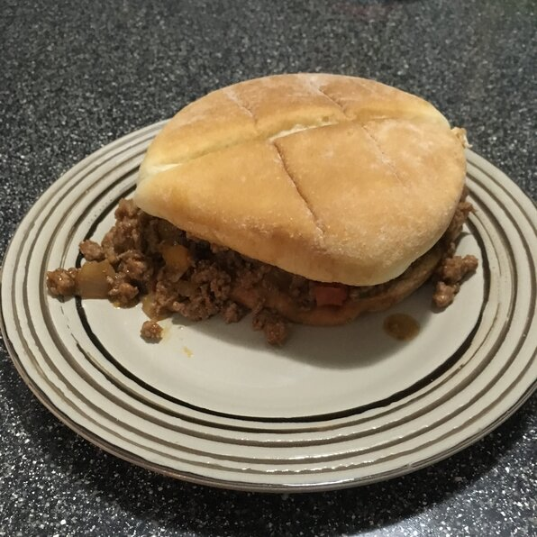

Homemade Sloppy Joes

Descriptions
Despite the name of this iconic retro dish, the secret to a great sloppy joe is a thick, rich, almost dry consistency, which allows the sandwich to be eaten with your hands. Serve on hamburger buns.
Ingredients
- 1 ½ pounds extra lean ground beef
- ½ onion, diced
- 2 cloves garlic, minced
- 1 green pepper, diced
- 1 cup water
- ¾ cup ketchup
- 1 dash Worcestershire sauce
- 2 tablespoons brown sugar
- 1 teaspoon Dijon mustard
- 1 ½ teaspoons salt, or to taste
- ½ teaspoon ground black pepper
- 1 cup water
- 1 pinch cayenne pepper to taste
Directions
- Place ground beef and onion in a large skillet. Turn heat to medium and cook and stir the mixture constantly until the beef is browned and forms small crumbles, about 10 minutes.
- Stir in garlic and green bell pepper; cook and stir until softened, 2 to 3 minutes. Add 1 cup water and stir, scraping the pan to dissolve any brown flavor bits from the bottom of the skillet.
- Mix in ketchup, Worcestershire sauce, brown sugar, Dijon mustard, salt, and black pepper. Add 1 more cup water and return mixture to a simmer. Reduce heat to low and simmer, stirring occasionally, until the liquid has evaporated and the mixture is thick, about 40 minutes.
- Season with salt , black pepper, and cayenne pepper to taste.
Home